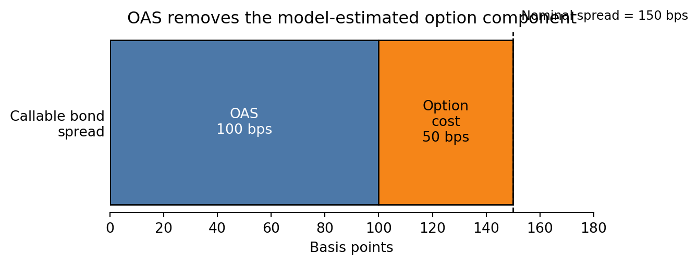

Lecture 8: Valuation of Bonds with Embedded Options and Option-Adjusted Measures
Learning Objectives
After completing this lecture you should be able to:
- Explain why embedded options make bond cash flows state-dependent and why today’s discount curve is no longer enough.
- Explain why traditional yield-spread analysis fails for bonds with embedded options and identify the limitations of yield-to-maturity comparisons.
- Interpret the static spread as a constant spread over the spot curve and explain why it still fails when cash flows are option-dependent.
- Describe the investment characteristics of callable and putable bonds, including capped upside and negative convexity for callable bonds.
- Decompose embedded-option bonds into an option-free bond plus or minus the value of the embedded option.
- Explain how an interest-rate lattice represents future rate states and why backward induction is used for valuation.
- Apply the node-level exercise rule for callable and putable bonds using the min/max logic.
- Interpret the option-adjusted spread (OAS) as compensation after adjusting for embedded-option effects.
- Explain why effective duration and effective convexity are needed when cash flows change as rates change.
1 Big Picture: Why Embedded Options Change Everything
In Lecture 7, the main idea was that a plain fixed-rate bond usually does not require a stochastic interest-rate model. If the cash flows are fixed, valuation is mostly discounted cash flow:
\[ P = \sum_i CF_i P(0,t_i). \]
Bonds with embedded options are different. Their cash flows are not fully known today because someone has a future choice:
- the issuer may call the bond;
- the investor may put the bond back to the issuer;
- mortgage borrowers may prepay;
- a structured note may change coupons based on future rates.
The option makes the bond’s cash flows state-dependent. We do not only need today’s discount curve. We need possible future interest-rate states, future bond values, and an exercise rule.
TipCore Intuition
A plain bond asks: “What are the promised cash flows worth today?”
A bond with an embedded option asks: “What might rates be in the future, what would the bond be worth in each future state, and would someone exercise the option?”
2 Drawbacks of Traditional Yield-Spread Analysis
Historically, fixed-income analysts compared the yield to maturity (YTM) of a corporate bond with the yield of a Treasury security of similar maturity to measure compensation for credit and liquidity risk. The yield spread was defined as
\[ \text{Yield spread} = y_{\text{corporate}} - y_{\text{Treasury}} \]
While straightforward, this measure suffers from several drawbacks:
Single-period perspective. Yield to maturity assumes the investor holds the bond to maturity and reinvests coupons at the YTM. It does not capture the term structure of discount rates or the timing of cash flows.
Ignores embedded options. Callable or putable bonds contain options that significantly affect cash flow timing and risk. Comparing YTMs of a callable corporate bond and a non-callable Treasury ignores the call option’s value. The resulting yield spread blends credit, liquidity, and option premiums, making interpretation difficult.
Assumes parallel shifts. Yield spread analysis implicitly treats interest-rate movements too simply. In reality, yield curves twist, steepen, flatten, and move non-parallel across maturities.
Fails to separate risk components. Credit risk, liquidity risk, and option risk vary across issuers and over time. A simple yield spread bundles them together.
Because of these limitations, modern valuation methods use term-structure models and option-adjusted measures to isolate risks and provide more consistent valuations.
The practical problem is that a quoted yield spread is a mixture. For a callable corporate bond, the spread may compensate investors for credit risk, liquidity risk, and the fact that the investor is short the issuer’s call option. A single YTM spread does not tell us how much comes from each source.

3 Static Spread: An Alternative to Yield Spread
The static spread (also called the I-spread) measures the constant margin over the Treasury spot curve that discounts a bond’s cash flows to its market price. For a bond with cash flows ({CF_{t_i}}) at times (t_1,t_2,,t_n) and Treasury zero rates ({r_{t_i}}), the static spread (s) solves
\[ P = \sum_{i=1}^{n} \frac{CF_{t_i}}{(1 + r_{t_i} + s)^{t_i}} \]
where (P) is the observed price.
Because the same spread (s) is added to all discount rates, the method accounts for the shape of the term structure while producing a single summary measure of compensation for non-Treasury risks. Unlike the yield spread, the static spread discounts each cash flow at a maturity-appropriate rate. That makes it more economically meaningful for coupon bonds, amortizing bonds, and bonds whose cash flows are distributed over time.
However, the static spread still has an important weakness: it discounts promised cash flows, not expected option-adjusted cash flows. For a callable bond, the promised maturity cash flow may never be received if the issuer refinances and calls the bond when rates fall.
NoteStatic Spread Intuition
Static spread improves on a simple yield spread because each cash flow is discounted using the spot rate for its own maturity. But it still treats the cash-flow schedule as fixed. That is why it works better for option-free bonds than for callable, putable, or mortgage-backed securities.

Example 1 - Computing the static spread
Suppose a five-year corporate bond has semiannual coupons of 6 percent, so it pays $30 every six months on a $1,000 face value. The Treasury spot curve for maturities 0.5 years to 5 years is:
\[ \{2.0\%,\, 2.2\%,\, 2.6\%,\, 3.0\%,\, 3.4\%,\, 3.8\%,\, 4.0\%,\, 4.1\%,\, 4.2\%,\, 4.3\%\} \]
Assume the bond trades at $1,020. We estimate the static spread numerically by solving for (s) such that discounted cash flows equal the market price.

Estimated static spread: 139.8 basis pointsIn this example the static spread is about 86 basis points. Economically, that means investors require roughly 86 basis points over the Treasury spot curve to hold this bond.
4 Callable Bonds and Their Investment Characteristics
A callable bond gives the issuer the right, but not the obligation, to redeem the bond before maturity at a specified call price according to a call schedule. The issuer will typically call the bond when prevailing rates fall below the coupon rate, allowing refinancing at a lower borrowing cost.
This embedded call option changes the bond’s economic behavior.
TipBorrower and Lender Intuition
The issuer is like a homeowner with the right to refinance a mortgage. If rates fall, refinancing is attractive to the borrower. But that same event hurts the lender, because the lender loses a high-coupon asset and must reinvest at lower rates.

Lower price than a comparable option-free bond
Because the issuer owns the right to call, the investor is effectively short a call option. The callable bond therefore must be worth less than an otherwise identical option-free bond:
\[ V_{\text{callable}} = V_{\text{option-free}} - V_{\text{call option}} \]
Negative convexity
As yields decline, the price of an option-free bond rises at an increasing rate. A callable bond does not. Once rates fall enough, the chance of being called rises sharply, which caps further price appreciation. This gives callable bonds negative convexity over some yield ranges.
Yield to worst
Because a callable bond may be redeemed at one of several call dates, investors often compute:
- yield to maturity
- yield to each call date
- yield to worst, which is the lowest among these yields
Yield to worst is a practical convention, but it is not a full valuation framework. It does not explicitly model volatility or the contingent nature of cash flows.
Price-yield relationship for a callable bond
To visualize negative convexity, we can compare the price-yield curve of an option-free bond with that of a callable bond.

The callable bond’s price is capped when yields fall enough for calling to become attractive to the issuer. This is the key intuition behind negative convexity.
5 Components of a Bond with an Embedded Option
A bond with an embedded option can be decomposed conceptually into two parts:
- Option-free bond. This is the value of the bond if no option existed.
- Embedded option. This is the value of the call or put written into the contract.
For a callable bond:
\[ V_{\text{callable}} = V_{\text{straight}} - V_{\text{call option}} \]
For a putable bond:
\[ V_{\text{putable}} = V_{\text{straight}} + V_{\text{put option}} \]
This decomposition is useful because it tells us exactly where the pricing distortion comes from. The bond itself generates fixed-income cash flows. The option changes the timing and certainty of those cash flows.

6 Valuation Model for Bonds with Embedded Options
The modern approach to valuing bonds with embedded options uses an interest-rate lattice and risk-neutral valuation.
The general logic is:
Build a tree of future short rates.
Determine future bond values at the terminal nodes.
Move backward through the tree using risk-neutral expectations.
At each node, apply the embedded option rule:
- callable bond: issuer chooses the lower of holding value and call price
- putable bond: investor chooses the higher of holding value and put price
The value at time 0 is the bond’s model price.

The key backward induction formula
For an option-free bond, backward induction uses
\[ V_{i,j} = \frac{p\, V_{i+1,j+1} + (1-p)\, V_{i+1,j}}{1 + r_{i,j}} + CF_i \]
where:
- \(V_{i,j}\) is the bond value at time step \(i\) and state \(j\)
- \(p\) is the risk-neutral probability of an up move
- \(r_{i,j}\) is the short rate at node \((i,j)\)
- \(CF_i\) is the coupon paid at that date
For a callable bond:
\[ V_{i,j}^{\text{callable}} = \min\left\{ \frac{p\, V_{i+1,j+1} + (1-p)\, V_{i+1,j}}{1 + r_{i,j}} + CF_i,\ \text{Call Price} \right\} \]
For a putable bond:
\[ V_{i,j}^{\text{putable}} = \max\left\{ \frac{p\, V_{i+1,j+1} + (1-p)\, V_{i+1,j}}{1 + r_{i,j}} + CF_i,\ \text{Put Price} \right\} \]
7 Why the lattice matters
The lattice is not just a computational trick. It is economically important.
At each date, interest rates may move up or down. That means the bond’s future value is not fixed today. The option’s value comes from this uncertainty.
The lattice lets us model three things at the same time:
- the time value of money
- uncertainty in future short rates
- optimal exercise of the embedded option
This is why spread measures based only on yield to maturity are inadequate for callable and putable bonds.
A useful way to think about the tree is this:
the horizontal direction represents time
the vertical direction represents interest-rate states
each node represents a possible short rate that could prevail at that future date
at each node, someone makes an economic decision:
- the issuer decides whether to call
- the investor decides whether to put
- if neither side exercises, the bond continues
So the embedded option makes the bond path-dependent. The value depends not only on maturity and coupon, but also on what happens to rates along the way.
8 Constructing a simple binomial interest-rate tree
To illustrate, consider a three-year bond with annual coupons of 8 on a face value of 100. Assume annual time steps. We first construct a simple short-rate tree directly for intuition.
Suppose the short-rate lattice is:
| Time | State 0 | State 1 | State 2 | State 3 |
|---|---|---|---|---|
| 0 | 5% | |||
| 1 | 4% | 6% | ||
| 2 | 3% | 5% | 7% | |
| 3 | 2% | 4% | 6% | 8% |
Assume:
- face value = 100
- annual coupon = 8
- callable at par, meaning call price = 100
- first callable date = year 2
- risk-neutral probability (p = 0.5)
This simplified tree is excellent for teaching because it isolates the core logic of backward induction.
9 Step-by-step numerical example: pricing an option-free bond and a callable bond
We now price the bond by hand using backward induction.
Step 1: Terminal values at maturity
At year 3 the bond pays final coupon plus principal:
\[ 108 = 100 + 8 \]
So the year-3 node values are:
| Node at Year 3 | Bond Value |
|---|---|
| 2% state | 108.00 |
| 4% state | 108.00 |
| 6% state | 108.00 |
| 8% state | 108.00 |
Step 2: Move backward to year 2 for the option-free bond
At each year-2 node, the option-free bond value is:
\[ V = \frac{0.5 \times 108 + 0.5 \times 108}{1 + r} + 8 = \frac{108}{1+r} + 8 \]
Year 2, rate = 3%
\[ V = \frac{108}{1.03} + 8 = 104.8544 + 8 = 112.8544 \]
Year 2, rate = 5%
\[ V = \frac{108}{1.05} + 8 = 102.8571 + 8 = 110.8571 \]
Year 2, rate = 7%
\[ V = \frac{108}{1.07} + 8 = 100.9346 + 8 = 108.9346 \]
So the option-free values at year 2 are:
| Node at Year 2 | Hold Value |
|---|---|
| 3% state | 112.85 |
| 5% state | 110.86 |
| 7% state | 108.93 |
Step 3: Apply the call feature at year 2
Because the bond is callable at par from year 2 onward, the issuer will compare the hold value with the call price of 100.
For the callable bond:
\[ V^{\text{callable}} = \min\{\text{Hold Value},\ 100\} \]
Thus:
| Node at Year 2 | Hold Value | Callable Value |
|---|---|---|
| 3% state | 112.85 | 100.00 |
| 5% state | 110.86 | 100.00 |
| 7% state | 108.93 | 100.00 |
This is the key economic point: at year 2 the straight bond is worth more than 100 in every state, so the issuer calls the bond immediately in every state.
Step 4: Move backward to year 1 for the option-free bond
Now compute the option-free bond values at year 1 using the option-free year-2 values.
Year 1, lower-rate node (r=4%)
\[ V = \frac{0.5(110.8571) + 0.5(112.8544)}{1.04} + 8 \]
\[ V = \frac{111.8558}{1.04} + 8 = 107.5537 + 8 = 115.5537 \]
Year 1, higher-rate node (r=6%)
\[ V = \frac{0.5(108.9346) + 0.5(110.8571)}{1.06} + 8 \]
\[ V = \frac{109.8959}{1.06} + 8 = 103.6754 + 8 = 111.6754 \]
So:
| Node at Year 1 | Option-Free Value |
|---|---|
| 4% state | 115.55 |
| 6% state | 111.68 |
Step 5: Move backward to year 1 for the callable bond
Now do the same using the callable values at year 2, which are both 100 in every reachable state.
Year 1, rate = 4%
\[ V = \frac{0.5(100) + 0.5(100)}{1.04} + 8 = \frac{100}{1.04} + 8 = 96.1538 + 8 = 104.1538 \]
Year 1, rate = 6%
\[ V = \frac{100}{1.06} + 8 = 94.3396 + 8 = 102.3396 \]
So:
| Node at Year 1 | Callable Value |
|---|---|
| 4% state | 104.15 |
| 6% state | 102.34 |
Step 6: Move backward to time 0
Option-free bond at time 0
\[ V_0^{\text{straight}} = \frac{0.5(115.5537) + 0.5(111.6754)}{1.05} + 8 \]
\[ V_0^{\text{straight}} = \frac{113.6146}{1.05} + 8 = 108.2044 + 8 = 116.2044 \]
Callable bond at time 0
\[ V_0^{\text{callable}} = \frac{0.5(104.1538) + 0.5(102.3396)}{1.05} + 8 \]
\[ V_0^{\text{callable}} = \frac{103.2467}{1.05} + 8 = 98.3302 + 8 = 106.3302 \]
Step 7: Embedded call option value
The call option value is the difference between the straight bond value and the callable bond value:
\[ V_{\text{call option}} = V_{\text{straight}} - V_{\text{callable}} \]
\[ V_{\text{call option}} = 116.2044 - 106.3302 = 9.8742 \]
So in this example:
| Quantity | Value |
|---|---|
| Option-free bond price | 116.20 |
| Callable bond price | 106.33 |
| Embedded call option value | 9.87 |
Interpretation of the numerical example
This example teaches three important things.
First, the callable bond is worth less than the straight bond because the issuer owns the call option.
Second, the option matters most when rates are low and the straight bond is worth substantially above par. In those states, the issuer will refinance and cap the investor’s upside.
Third, the lattice makes the exercise decision explicit at each node. That is the real advantage of the model.
NoteWorked Example: When the Call Is Exercised Only in Low-Rate States
The previous example calls the bond in every year-2 state. More realistically, the issuer may call only when rates are low enough.
Assume the same 3-year annual-pay bond:
- face value = 100;
- coupon = 8;
- callable at par from year 2;
- risk-neutral probability \(p=0.5\).
Now suppose the year-2 short rates are higher:
| Year-2 short rate | Option-free hold value |
|---|---|
| 4% | \(\frac{108}{1.04}+8=111.85\) |
| 8% | \(\frac{108}{1.08}+8=108.00\) |
| 12% | \(\frac{108}{1.12}+8=104.43\) |
If the call price is 107, the callable value at year 2 is:
| Year-2 short rate | Hold value | Callable value |
|---|---|---|
| 4% | 111.85 | 107.00 |
| 8% | 108.00 | 107.00 |
| 12% | 104.43 | 104.43 |
The issuer calls in the 4% and 8% states because the bond is worth more than the call price. The issuer does not call in the 12% state because keeping the bond outstanding is cheaper than paying 107.
The key lesson is that the call rule is state-dependent. The lattice is useful because it checks the exercise decision separately at each future node.
10 A compact implementation of the same logic
The same backward-induction logic can be implemented mechanically. The calculation below reproduces the option-free price, callable price, and embedded call option value from the classroom example.
Option-free price: 116.2043
Callable price: 106.3302
Call option value: 9.874011 Constructing a model-based binomial tree
In more formal models, rates evolve according to a short-rate process rather than being assigned directly. For example, with a lognormal up and down structure:
\[ u = e^{\sigma \sqrt{\Delta t}}, \qquad d = \frac{1}{u} \]
and a stylized risk-neutral probability
\[ p = \frac{e^{r \Delta t} - d}{u - d} \]
A short-rate tree can then be generated from an initial rate (r_0). The point of such a tree is not just to create possible future rates, but to calibrate those rates so that the model reproduces today’s observed yield curve.
Time 0: [np.float64(0.05)]
Time 1: [np.float64(0.0452), np.float64(0.0553)]
Time 2: [np.float64(0.0409), np.float64(0.05), np.float64(0.0611)]
Time 3: [np.float64(0.037), np.float64(0.0452), np.float64(0.0553), np.float64(0.0675)]
Risk-neutral probability: 0.7309In practice, professional valuation systems use calibrated models such as Ho-Lee, Black-Derman-Toy, Hull-White, or Black-Karasinski. The teaching objective here is not the full calibration machinery, but the economic structure of the valuation.
12 Incorporating default risk
The lattice framework can be extended to corporate bonds in several ways.
One approach is to add a credit spread (s) to each node’s short rate:
\[ r_{i,j}^{\text{risky}} = r_{i,j} + s \]
Another is to introduce default probabilities and recovery assumptions directly into the tree. Then the node value reflects both survival and default scenarios.
These extensions are important in practice because many callable bonds are corporate or structured products whose spreads reflect both credit and optionality.
13 Implementation challenges
Real-world implementation is harder than the classroom example suggests. A practical model must decide:
- how to fit the current zero curve
- how to model volatility
- how to model mean reversion
- how to treat credit risk and liquidity
- how to handle complex call schedules
- how to incorporate sinking funds, make-whole calls, or prepayment behavior
Even so, the lattice remains one of the clearest frameworks for understanding the economics of embedded options.
14 Option-Adjusted Spread (OAS)
The option-adjusted spread measures the constant spread over the risk-free curve that equates the model price of a bond, after adjusting for embedded option effects, to its market price.
Unlike the static spread, the OAS discounts expected path-dependent cash flows, not simply promised contractual cash flows.
A general expression is:
\[ P_{\text{market}} = \sum_{\text{paths}} \frac{\Pr(\text{path}) \times CF_{\text{path}}} {\prod_{i}(1 + r_{i,\text{path}} + s_{\text{OAS}})^{\Delta t}} \]
where the sum runs over all interest-rate paths.
Why OAS matters
Suppose two bonds have the same nominal spread over Treasuries, but one is callable and the other is not. The callable bond’s spread partly compensates the investor for being short the call option. The OAS attempts to strip out that option effect.
That makes OAS a cleaner measure of relative value when embedded options matter.
Relating nominal spread, static spread, and OAS
- Nominal spread compares one yield with another yield.
- Static spread discounts promised cash flows using the spot curve plus a constant spread.
- OAS discounts expected option-adjusted cash flows using a model of future rates and option exercise.
So for bonds with embedded options, OAS is usually the economically relevant spread measure.
Determining the option cost in spread terms
If a callable bond has a nominal spread of 150 basis points but an OAS of 100 basis points, then roughly 50 basis points of the nominal spread reflect the call option rather than pure credit or liquidity compensation.

15 Effective Duration and Convexity
For bonds with embedded options, traditional Macaulay duration and convexity are inadequate because cash flows depend on the future path of interest rates.
Instead, we use effective duration and effective convexity, which are based on revaluing the bond after small changes in the entire yield curve.
Let:
- (P_0) = base price
- \(P_-\) = price when the curve shifts down by \(\Delta y\)
- \(P_+\) = price when the curve shifts up by \(\Delta y\)
Then:
\[ D_e = \frac{P_- - P_+}{2P_0\Delta y} \]
\[ C_e = \frac{P_- + P_+ - 2P_0}{P_0(\Delta y)^2} \]
For callable bonds, effective duration is often shorter than for an otherwise similar option-free bond, and effective convexity may become small or even negative when the bond is likely to be called.

Example 2 - Effective duration and convexity
Using the callable bond in our lattice example, we can shift the entire short-rate tree up and down by 50 basis points and reprice the bond.
Base price: 106.3302
Price with rates up: 105.4363
Price with rates down: 107.2369
Effective duration: 1.6934
Effective convexity: 4.7739Because the call feature limits upside when rates fall, the callable bond’s price response is asymmetric. That is exactly what effective convexity is designed to capture.
Key Points
- Embedded options make bond valuation state-dependent: we need future rate states, future bond values, and an exercise rule.
- Yield spread is easy to compute but mixes credit, liquidity, curve, and option compensation into one number.
- Static spread improves on nominal spread by discounting promised cash flows off the spot curve, but it still assumes the cash-flow schedule is fixed.
- A callable bond is worth less than an otherwise identical option-free bond because the investor is short the issuer’s call option; a putable bond is worth more because the investor owns the put option.
- Callable bonds have capped upside when rates fall, which can create negative convexity.
- The interest-rate lattice is the core valuation tool because it models future short-rate uncertainty and allows exercise decisions at each node.
- Backward induction starts from future payoffs and works back to today’s price; callable bonds apply a min operator and putable bonds apply a max operator at exercise nodes.
- The step-by-step lattice examples show that the call decision is state-dependent: the issuer calls only when the hold value exceeds the call price.
- OAS is the spread that equates market price with model price after accounting for option effects, making it cleaner than nominal or static spread for option-embedded bonds.
- Effective duration and effective convexity are repricing-based risk measures, so they can capture changing cash flows and changing exercise probabilities.
Suggested Readings
Fabozzi, Bond Markets: Analysis and Strategies, Chapter 18.